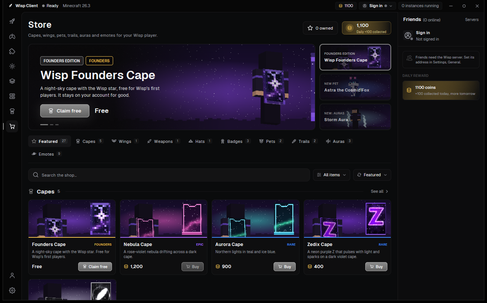

An engine of its own
Wisp is Minecraft: Java Edition 26.3 rewritten from scratch in Rust, on Vulkan and DirectX 12. Same worlds, same rules, same terrain, with no Java to install.
30 mods built in
Press Right Shift for the Wisp Menu: FPS, Keystrokes, CPS, Freelook, Waypoints, Wavy Capes and more. Each one is a switch, and the HUD goes where you drag it.
Always up to date
The launcher finds new versions by itself, shows you the download and installs them once no game is running. Your session is renewed while you play.
Every cosmetic for free
Capes that wave as you run, wings, hats, pets, trails, auras and emotes. Everything in the Shop is paid with Wisp Coins, which you get as a welcome gift and a daily bonus. Nothing costs real money.

Take a look inside

One launcher for everything
Sign in with Microsoft, press Play, and jump back into your worlds and servers from the Home page.

The Minecraft you know
Vanilla world generation, mobs, villagers and redstone on your existing worlds, drawn by Wisp's own renderer.

Play with friends
Invite friends into your world with a code, open it to LAN, or join any server, online mode included.